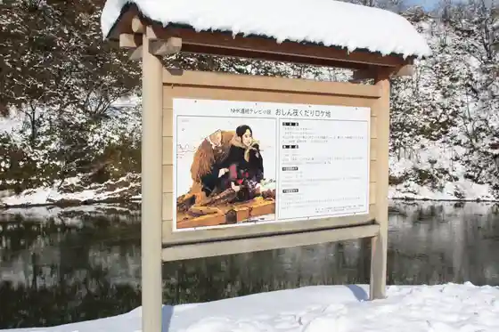
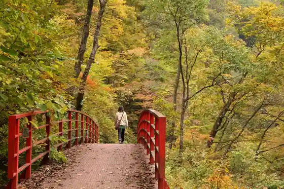
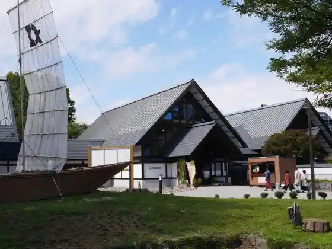

Roadside Station (Oe)
Oe, Yamagata · 0237-62-5845 · Official / source link
Tateyama Park (Nippon'ichi Park / Aterazawa Tateyama Shiro Shiseki Park)
Oe, Yamagata · 0237-62-2139 · Official / source link
(Oshin) Ikada Kudari Rogachi
Oe, Yamagata · Official / source link

Koji Gorge “ Shintsu Kyo ”
Oe, Yamagata · 0237-62-2139 · Official / source link

Terume Hakuryo Kenko Onsen Kan
Oe, Yamagata · 0237-83-4126 · Official / source link

Oyama Nature Park Koteji Campground
Oe, Yamagata · 0237-62-5421 · Official / source link
Su no Fudo Taki
Oe, Yamagata · Official / source link
Oku Oe Yanagawa Onsen
Oe, Yamagata · 0237-64-2151 · Official / source link
Saijo Kawafune Un Saijo Kawafune Uta
Oe, Yamagata · 0237-62-2139 · Official / source link
Narayama Fudo Taki
Oe, Yamagata · Official / source link
Otaki (Oe)
Oe, Yamagata · Official / source link
Oe Koryu Suteshon
Oe, Yamagata · 0237-62-5501 · Official / source link
Oto Moriyama Nature Park
Oe, Yamagata · 0237-62-2139 · Official / source link
Kuni Shitei Historic Site Aterazawa Tateyama Castle Ruins
Oe, Yamagata · 0237-62-3666 · Official / source link
Eiga (Isha) Sensei Rogachi (Oe Fujita)
Oe, Yamagata · 0237-62-2139 · Official / source link
Oyama Nature Park
Oe, Yamagata · 0237-62-5421 · Official / source link
Ya Hiki Sawa no Dai Sugi
Oe, Yamagata · Official / source link
Hara Town Tori
Oe, Yamagata · Official / source link
Matsu Ho no Dai Sugi
Oe, Yamagata · 0237-62-3666 · Official / source link
Kamishiro Kaya
Oe, Yamagata · Official / source link
Sho Shitsu Kawa Castle Ruins
Oe, Yamagata · 0237-62-2139 · Official / source link
Saijo Kawa Kahan (Sakura)
Oe, Yamagata · 0237-62-2139 · Official / source link
Oe Ritsu Folk History Museum
Oe, Yamagata · 0237-62-3666 · Official / source link
Kyokai In Yamato
Oe, Yamagata · 0237-62-3666 · Official / source link